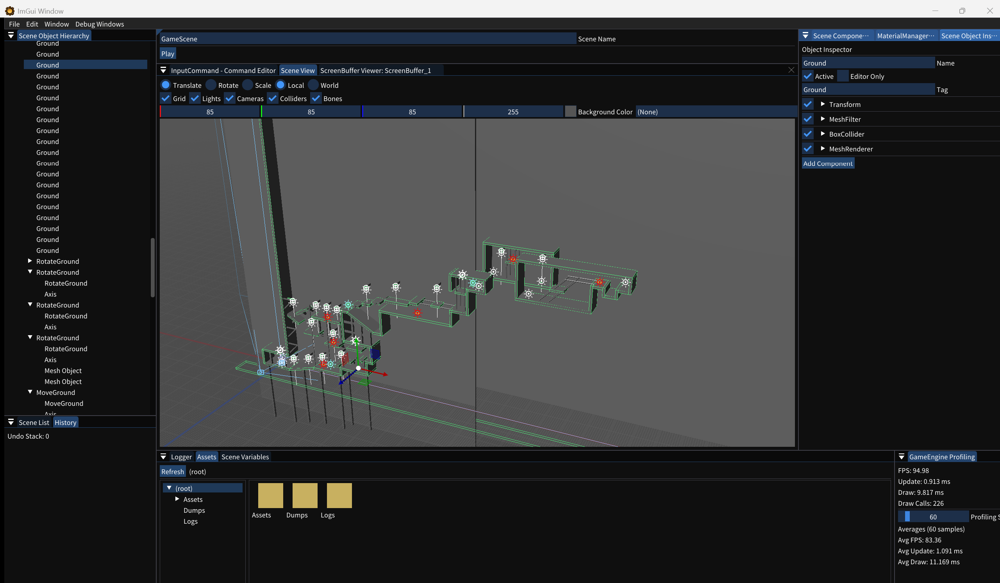

5. 当たり判定を付ける
PlayerVisualへBoxColliderを追加し、Scene Viewのワイヤーフレームで範囲を確認します。
BoxColliderを追加する
- 対象を選択するHierarchyで
PlayerVisualを選択します。 - Add Componentを開くScene Object Inspectorの最下部にある
Add Componentを押します。 - BoxColliderを追加するコンポーネントメニューから
BoxColliderを選択します。 - タグを付けるBoxCollider内の共通プロパティ
TagへPlayerBoxを入力します。 - 形状を確認するCenterを
(0, 0, 0)、Sizeを(1, 1, 1)にし、Scene Viewに表示されるコライダー線を確認します。

地面も作る
- Create Object›3D›Mesh Objectでオブジェクトを作り、
Groundと名付けます。 - TransformのTranslateを
(0, -0.5, 0)、Scaleを(8, 1, 8)にします。 - Add Componentで
BoxColliderを追加し、TagをGroundBoxにします。 Ctrl+Sで保存します。
主な設定
| 設定 | 意味 |
|---|---|
| Center / Size | Transformを基準にした判定中心と基本サイズ |
| Is Trigger | 有効にすると押し戻さず、接触イベントだけを通知する |
| Continuous Detection | 高速移動時のすり抜けを抑えるため連続判定を行う |
| Sync Position / Rotation / Scale | Transformの各軸をコライダーへ反映するか指定する |
| Tag | スクリプトからPlayerやGroundを判別する文字列 |
線が表示されない場合
Scene Viewの表示オプションでCollider Gizmosを有効にし、Hierarchyで対象オブジェクトを選択してください。ゲーム画面にはデバッグ用の線は描画されません。
Scene Viewの表示オプションでCollider Gizmosを有効にし、Hierarchyで対象オブジェクトを選択してください。ゲーム画面にはデバッグ用の線は描画されません。
衝突イベント、RigidBody、各コライダーの詳細は衝突判定のリファレンスを参照してください。